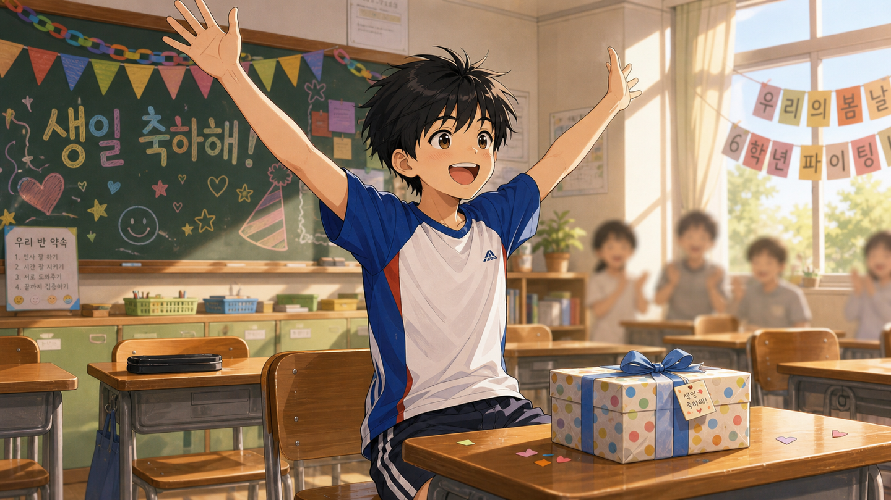
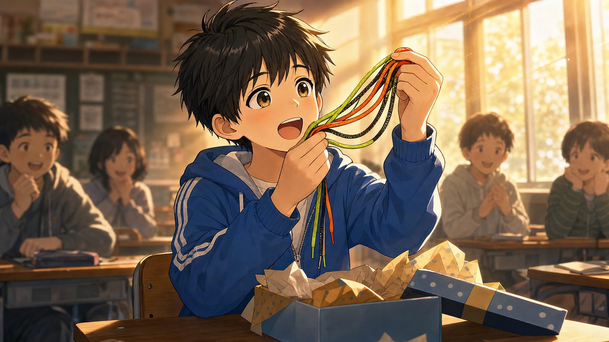
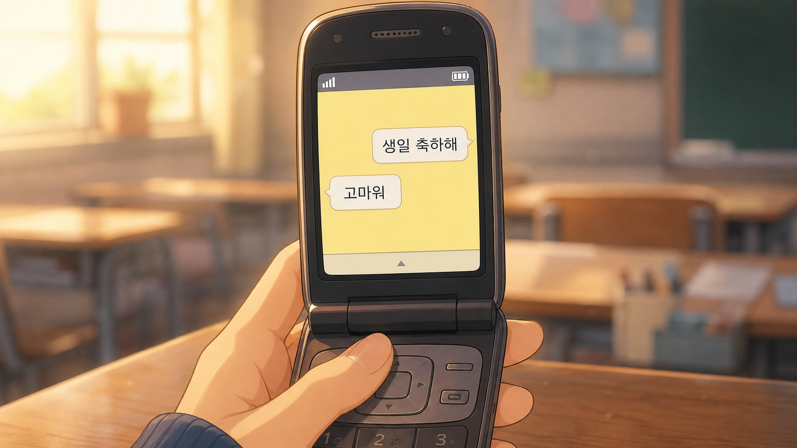
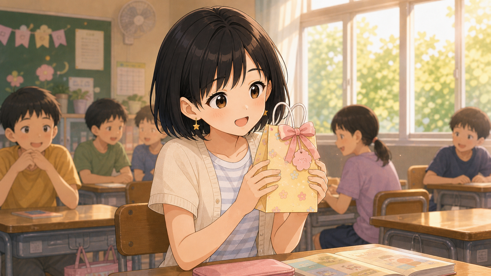
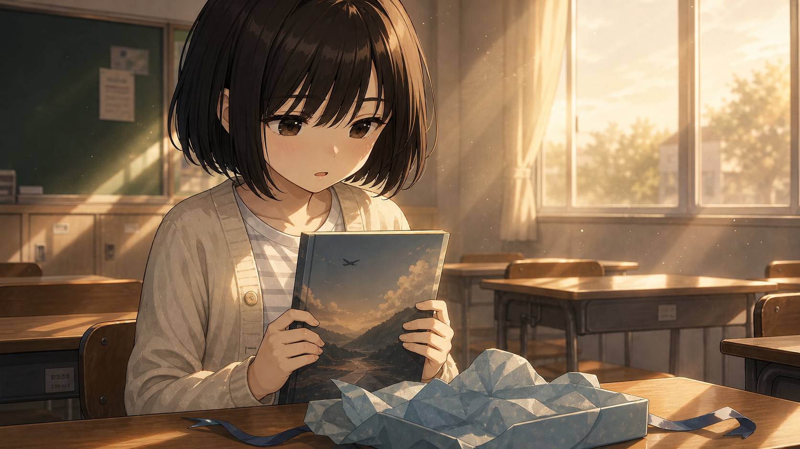
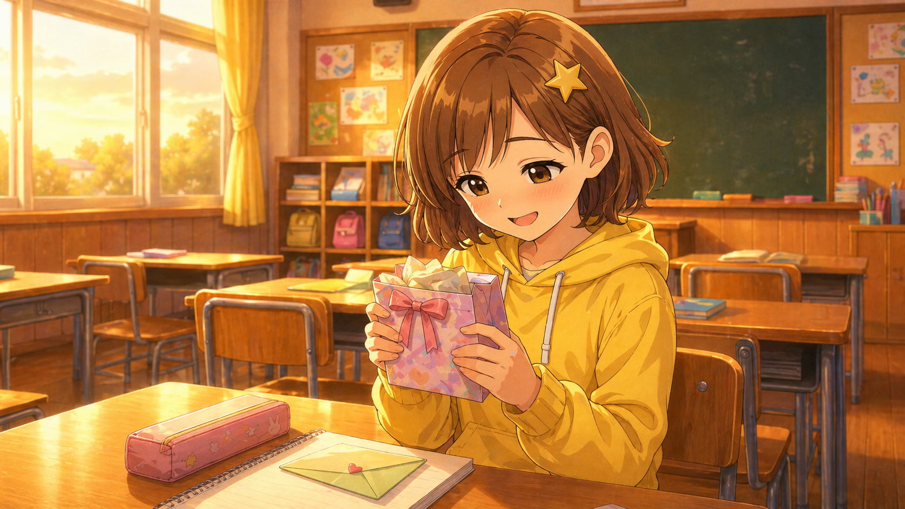
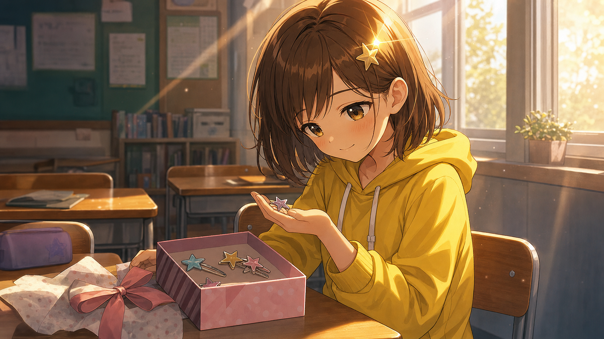
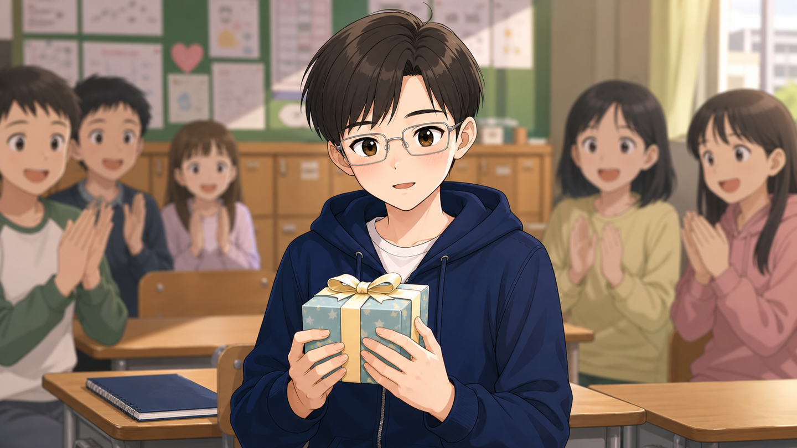
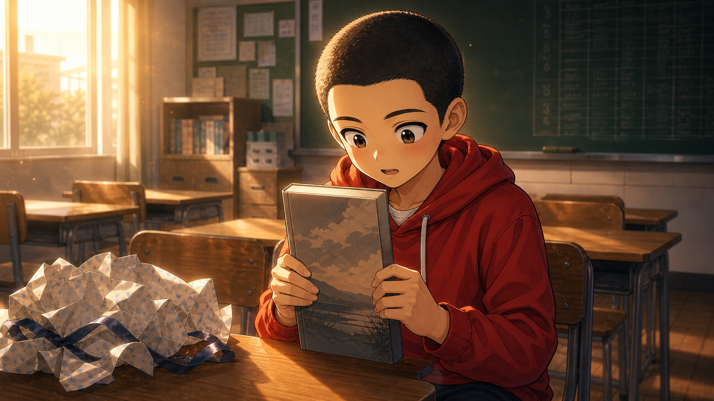

카톡으로 축하한다
동일 프롬프트
jihun-birthday c2와 동일 이미지 (SHA 일치). 위 카드 참조.
체크포인트
- jihun-birthday c2와 동일 파일이어야 함 (이미 SHA 검증됨 ✓)

events/elementary/subin-birthday_c2.png
PR #66에서 추가된 신규 자산(c1 전용 4개 + 공통 카톡 사본 3개) + 기존 자산을 프롬프트와 나란히 검수합니다. 각 이미지가 (1) 프롬프트의 핵심 요소를 충족하는지, (2) 캐릭터 디자인이 레퍼런스와 일관되는지, (3) 카톡 컷의 한글이 깨지지 않는지 확인하세요.
교실에서 지훈이 생일 축하받음. 단톡방에 생일 축하 메시지가 쏟아진다.
Elementary classroom. Jihun (reference) reacting with exaggerated joy to a gift, "야 너 최고다!" moment — arms thrown up, huge grin. Small wrapped gift on his desk. Mood: pure happy energetic friendship.
초등학교 교실. 지훈(레퍼런스)이 선물에 과장되게 기뻐하는 모습 — "야 너 최고다!" 양팔을 번쩍 들고 활짝 웃음. 책상 위 작게 포장된 선물. 분위기: 순수하고 에너지 넘치는 우정.

이미지 로드 실패Elementary classroom. Jihun (reference) holding a set of basketball shoelaces (multiple colors — neon green/orange/black) up to the light, mouth agape in genuine awe, eyes wide and glassy. Mid-laugh but with a serious moved undertone. Wrapped gift box open on his desk. Background: classmates blurred, slanting golden afternoon light through windows. Dialogue cue: "야, 이거... 너 진짜 나랑 오래 볼 생각인가 보네." — implied through expression, mid-laugh that turned serious. Mood: friendship deepening — small gift, big meaning.
초등학교 교실. 지훈(레퍼런스)이 농구화 끈 세트(여러 색 — 네온그린/오렌지/검정)를 빛에 비춰 들고, 진심으로 감탄하며 입을 벌린 표정. 눈이 커지고 살짝 촉촉. 웃다가 진지해지는 중간 표정. 책상 위 포장 풀린 선물 상자. 배경: 흐릿한 반 친구들, 창으로 비스듬히 들어오는 황금빛 오후 햇살. 대사 힌트: "야, 이거... 너 진짜 나랑 오래 볼 생각인가 보네." — 표정으로 암시. 분위기: 우정이 깊어지는 순간 — 작은 선물, 큰 의미.

이미지 로드 실패Close-up of a 2012-era flip phone or slide phone screen showing a Korean messaging app chat interface (soft yellow background, white speech bubbles — generic style, no brand name): sent bubble "생일 축하해", reply bubble "고마워" — short and minimal. Phone is held by a hand in the lower frame, blurred classroom or desk in deep background (no specific NPC visible — must be reusable across 3 events). Lighting: soft afternoon classroom ambience, slight bokeh on background. Mood: casual minimal effort — the safe, distant choice between friends who could be closer.
2012년대 폴더폰/슬라이드폰 화면 클로즈업. 한국어 메시지 앱 채팅 인터페이스 (부드러운 노란 배경 + 흰색 말풍선 — 브랜드 없는 generic 스타일): 보낸 말풍선 "생일 축하해", 답장 말풍선 "고마워" — 짧고 미니멀. 하단 프레임에 폰을 잡은 손, 깊이 들어간 배경에 흐릿한 교실/책상 (특정 NPC 식별 불가 — 3개 이벤트 재사용용). 조명: 부드러운 오후 교실 분위기, 배경 살짝 보케. 분위기: 가벼운 성의 — 친해질 수 있었지만 안전하게 거리 두는 선택.

이미지 로드 실패2학기 9월. 수빈이 생일이라는 게 떠올랐다.
Elementary classroom. Subin (reference) eyes wide in surprise, both hands cupping a small gift bag, shy happy smile, cheeks faintly pink. "어... 어떻게 알았어!" feeling. Mood: sweet unexpected joy, quiet character's rare delight.
초등학교 교실. 수빈(레퍼런스)이 놀란 듯 눈이 커지고, 양손으로 작은 선물 가방을 공손히 받아든 모습. 수줍은 행복한 미소, 볼 살짝 분홍빛. "어... 어떻게 알았어!" 같은 분위기. 분위기: 예상치 못한 달콤한 기쁨, 조용한 캐릭터의 보기 드문 환한 표정.

이미지 로드 실패Elementary classroom afternoon. Subin (reference) holding a travel essay book with both hands, head slightly down, eyes shadowed by hair, lips parted but no words coming out. Long held silence. Book cover should suggest travel/distance — silhouette of distant landscape, airplane, or open road imagery (no specific brand text). Background: empty classroom, late afternoon golden light from windows, dust motes visible. Dialogue cue: "...너, 내가 어디 떠나고 싶어하는 거 알았어?" — moment when she realizes the protagonist saw a part of her she rarely shows. Mood: quiet revelation, unspoken understanding between two reserved kids.
초등학교 교실 오후. 수빈(레퍼런스)이 여행 에세이 책을 양손으로 들고, 고개를 살짝 숙여 머리카락에 눈이 가려짐. 입은 살짝 벌렸지만 말이 안 나옴. 길게 유지되는 침묵. 책 표지는 여행/먼 곳을 암시 — 먼 풍경 실루엣, 비행기, 트인 길 이미지 (특정 브랜드 글자 없음). 배경: 빈 교실, 창으로 들어오는 늦은 오후 황금빛, 먼지 입자가 보임. 대사 힌트: "...너, 내가 어디 떠나고 싶어하는 거 알았어?" — 평소 안 보이던 면을 들킨 순간. 분위기: 조용한 깨달음, 말 없는 두 아이의 무언의 이해.

이미지 로드 실패jihun-birthday c2와 동일 이미지 (SHA 일치). 위 카드 참조.
2학기 후반. 유나는 조용히 자리에 앉아 있다.
Classroom afternoon. Yuna (reference) quietly receiving a small gift, hands both holding it, looking down, ears and cheeks faintly red. Small genuine smile. Mood: subtle deep emotion, quiet character's rare vulnerability.
오후의 교실. 유나(레퍼런스)가 조용히 선물을 받아든 모습, 양손으로 잡고 시선은 아래로, 귀와 볼이 살짝 빨갛다. 작지만 진심 어린 미소. 분위기: 은은하지만 깊은 감정, 조용한 캐릭터의 보기 드문 약한 모습.

이미지 로드 실패Elementary classroom, late afternoon — sunlight streaming through windows in clear bright shafts. Yuna (reference) just put on a small star-shaped hairpin (one of a set, others visible in opened gift box on desk). She's looking down quietly examining a second pin in her palm, but the corner of her mouth turns up — a private smile rarely shown. The protagonist is implied (off-frame). Light catches the metal star on her hair — small flare of golden window light reflecting off it. Dialogue cue: "...이거, 내가 늘 쓰는 거 알았어?" — a moment of being seen. Mood: quiet character finally feeling noticed in a way that matters.
초등학교 교실, 늦은 오후 — 창으로 또렷한 햇살이 들어옴. 유나(레퍼런스)가 막 작은 별 모양 머리핀을 꽂은 모습 (세트 중 하나, 나머지는 책상 위 열린 선물 상자에 보임). 시선은 아래로, 손바닥 위 두 번째 핀을 조용히 살피지만 입꼬리가 살짝 올라감 — 거의 보여주지 않는 사적인 미소. 주인공은 프레임 밖에서 암시. 머리에 꽂힌 금속 별에 황금빛이 반사되어 작은 플레어. 대사 힌트: "...이거, 내가 늘 쓰는 거 알았어?" — 알아봐주는 순간. 분위기: 조용한 캐릭터가 마침내 의미 있게 알아봐졌다고 느끼는 순간.

이미지 로드 실패jihun-birthday c2와 동일 이미지 (SHA 일치). 위 카드 참조.

교실에서 누군가 "야 민재 생일이래!" 외쳤다. 민재가 살짝 당황하면서도 웃는다.
Elementary classroom, after school hours. Minjae (reference) holding a small gift box with both hands, wide surprised smile showing teeth, cheeks slightly red. Blurred classmates in background clapping/watching. Mood: heartfelt surprise, childhood friendship milestone.
초등학교 교실, 방과후. 민재(레퍼런스)가 작은 선물 상자를 양손으로 들고, 이를 드러내며 환하게 놀란 듯 웃는 표정, 볼이 살짝 빨갛다. 배경에 흐릿한 반 친구들이 박수치며 지켜봄. 분위기: 진심에서 우러난 놀람, 어린 시절 우정의 한 장면.

이미지 로드 실패Elementary classroom, after school. Minjae (reference) holding a hardcover book with both hands, head tilted down reading the title, expression frozen between surprise and a smile he's not letting through. The carefully composed "전교 1등" facade is visibly cracking — eyes a touch wider than usual, lips slightly parted. Book cover should suggest something thoughtful (a literary novel or quiet essay collection — not a study guide). Wrapping paper crumpled on the desk beside him. Background: empty classroom, late afternoon warm light, blurred chalkboard with faint test results still visible. Dialogue cue: "...너, 날 너무 잘 아는데?" — first moment his guard fully drops. Mood: rival becoming friend — gift that names the unspoken self.
초등학교 교실, 방과후. 민재(레퍼런스)가 양장본 책을 양손으로 들고, 고개를 살짝 숙여 제목을 읽는 모습. 표정은 놀람과 흘리지 않으려는 미소 사이에서 멈춤. "전교 1등" 으로 정성껏 다듬은 가면이 눈에 띄게 금이 가는 순간 — 평소보다 조금 커진 눈, 살짝 벌어진 입술. 책 표지는 사색적인 분위기 (문학 소설 또는 조용한 에세이집 — 학습 참고서 ❌). 옆 책상에 구겨진 포장지. 배경: 빈 교실, 늦은 오후 따뜻한 빛, 칠판에 흐릿한 시험 결과가 살짝 보임. 대사 힌트: "...너, 날 너무 잘 아는데?" — 가드를 완전히 내리는 첫 순간. 분위기: 라이벌이 친구가 되는 — 말하지 않은 자신을 짚어준 선물.

이미지 로드 실패